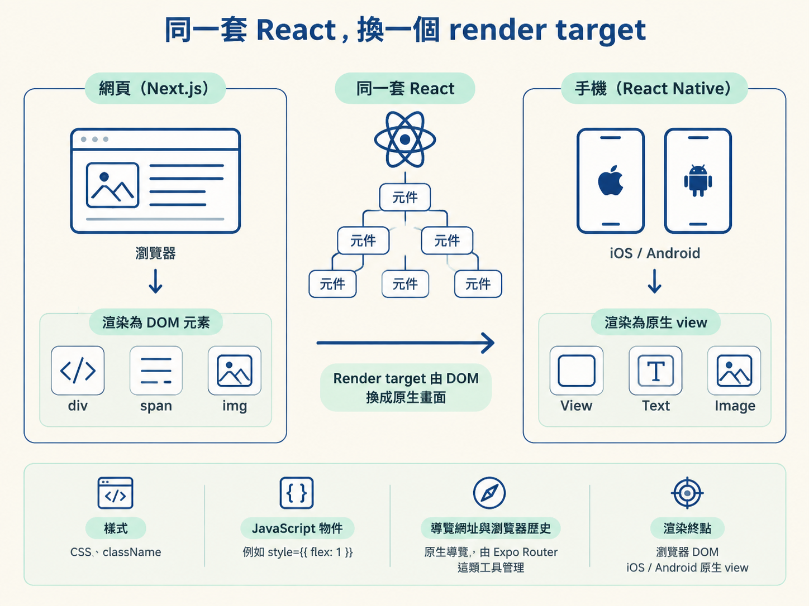
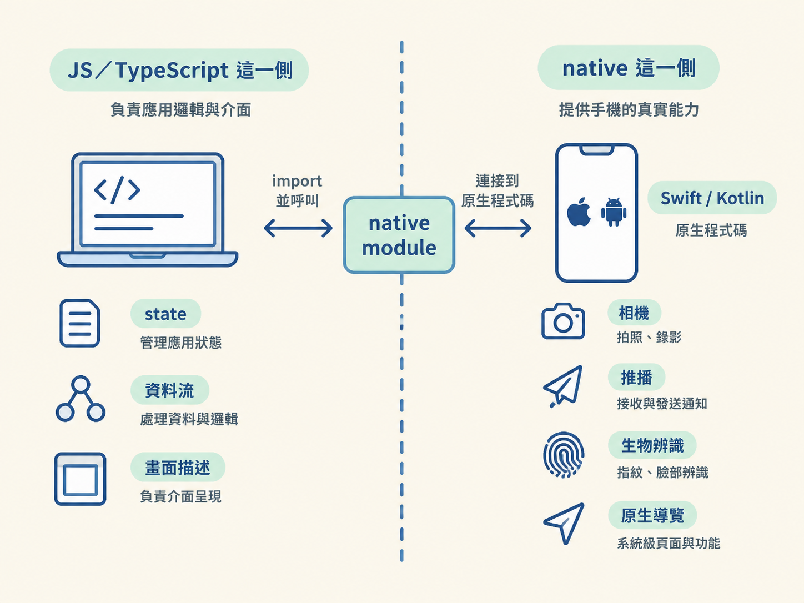

你會知道 React Native 的 JavaScript 跑在哪裡、React 元件如何變成手機上的原生畫面，也能說明它為什麼和瀏覽器裡的 React 不是同一套執行環境。
你寫 Next.js 時，有些事情幾乎不用特別思考：畫面最後會落到 DOM，標籤通常是 <div>、<span>，樣式交給 CSS，路由則由網址和瀏覽器歷史管理。這些預設值太熟悉了，所以第一次打開 React Native 專案，看到 <View>、<Text> 和 style={{ flex: 1 }}，很容易產生一種感覺：「這明明也是 React，怎麼又不太像 React？」
這一節先不急著背手機元件，而是要處理這個「不太像」。如果 JS 與 native 的界線沒有畫清楚，後面遇到 Expo Go 為什麼有極限、為什麼安裝套件後要重新編譯、為什麼某些功能在模擬器裡怎麼測都測不出來，就只能把它們當成零散規則硬記。把界線看懂之後，這些現象其實都能從同一個原因推導出來。
React 本身主要負責一件事：根據 state，算出畫面應該長什麼樣子，再把差異套用到某個目標上。這個目標就叫做 render target，也就是「最後真正接收畫面結果的地方」。
在網頁裡，render target 是瀏覽器的 DOM。React DOM 會把 React 算出的差異寫進真實 DOM；在手機上，render target 則換成 iOS 和 Android 的原生畫面，由 React Native 把同一棵 React 元件樹接到原生元件上。
因此，React Native 不是「把網頁塞進手機」，也不是「用 JavaScript 假裝成原生」。它保留 React 的元件與渲染流程，只是把 render 的終點從 DOM 換成原生 view。可以把 React 想成同一個劇團：劇本和排戲方式大致相同，但這次演出的舞台換成了手機的原生系統，不再是瀏覽器。
把兩種環境並排比較，差異會更清楚：
| 面向 | 網頁（Next.js） | React Native |
|---|---|---|
| 畫面元素 | <div>、<span>、<img> | <View>、<Text>、<Image> |
| 樣式 | CSS、className | JavaScript 物件，例如 style={{ flex: 1 }} |
| 導覽 | 網址與瀏覽器歷史 | 原生導覽，由 Expo Router 這類工具管理 |
| 渲染終點 | 瀏覽器 DOM | iOS / Android 原生 view |

乍看之下，這好像只是把標籤名稱換掉。但真正要緊的是：最後是誰把畫面畫出來。在網頁裡，負責畫圖的是瀏覽器；在 React Native 裡，負責畫圖的是 iOS 或 Android 的原生系統。React Native 負責把 React 的描述傳到正確的舞台。
React Native app 的大部分程式碼，都是 JavaScript 或 TypeScript。你寫的 state、資料流、畫面描述，以及按鈕被點擊後要做什麼，全都位在 JS 這一側。這一側可以想成劇本：它決定什麼時候出現什麼內容，也決定使用者做出某個動作後，程式要如何回應。
可是手機本身還有許多能力，不能只靠 JS 直接完成。相機、推播、生物辨識、系統層的錯誤監控，以及原生導覽列，都住在界線的另一側。這些能力通常要透過 Swift 或 Kotlin 等原生語言接起來。
工程上的做法，是把原生能力包裝成一個 JavaScript 可以呼叫的介面。這種包裝好的模組，就叫做 native module（原生模組）。對 JS 來說，它看起來可能只是一個可以 import、可以呼叫的函式；但函式背後，其實有真正的原生程式碼正在工作。
這不是只存在於文件裡的抽象名詞。課程裡會遇到的幾個套件，其實都跟這一側有關：Sentry 是 native module，相機權限那組 API 是 native module，Clerk 的原生登入與 Expo 的 native tabs，也都踩在這條界線的 native 一側。
React Native 的日常是：你在 JS 這一側寫劇本；劇本需要碰到手機的真實能力時，就隔著一條線呼叫 native 那一側的裝置。

一旦理解 JS 與 native 的分工，許多開發時遇到的問題就不再像規則背誦。
如果只是修改純 JS，通常等於換了一段劇本。程式可以很快重新載入，因為舞台本身沒有改變。但如果你新增一個 native module，就像是在舞台上加裝一台新的機械裝置。光重新念一次台詞不夠，還得重新施工、重新驗收。這就是「為什麼裝個套件要 rebuild」的根源；到了 Step 4，我們會完整拆開這件事。
Expo Go 的限制也可以用同一個比喻理解。Expo Go 是一個事先準備好的通用舞台，裡面已經裝好固定幾組原生能力。你不能在演出進行到一半時，把任意的新機械直接塞進去。
當 app 需要 Expo Go 沒有內建的原生能力，就必須自己產出一個包含這項能力的專屬舞台，也就是 development build。這會是 Step 3 要處理的主題。
React Native 保留了 React 的元件樹與資料流，但把 render 的終點從瀏覽器 DOM 換成 iOS / Android 的原生 view。app 的邏輯大多活在 JS 這一側；當程式需要碰到手機硬體或系統能力時，就要透過另一側的 native module。這條 JS 與 native 的界線，是後面「Expo Go 不夠用」以及「安裝套件後要重建」等現象的共同根源。
所以，React Native 和網頁 React 的關係，其實是同一套 React 思考方式，只是接到了不同的 render target，並沒有誰真原生、誰假原生。理解這一點後，下一個問題就會自然浮現：既然手機底層還有這麼多設定，開始一個專案時，難道要自己手刻 iOS 與 Android 的所有細節嗎？下一節要介紹的 Expo，就是用來回答這個問題。